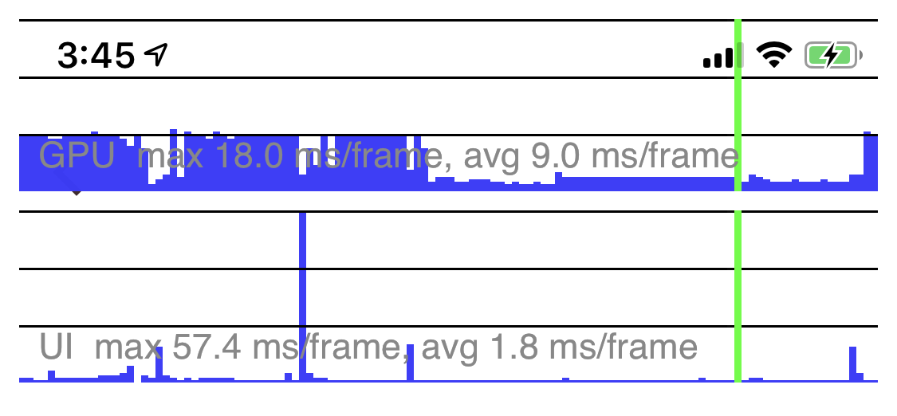
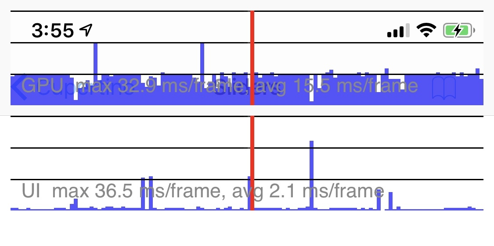
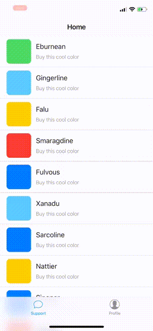
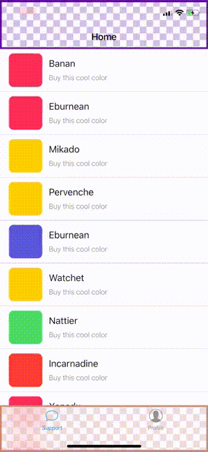
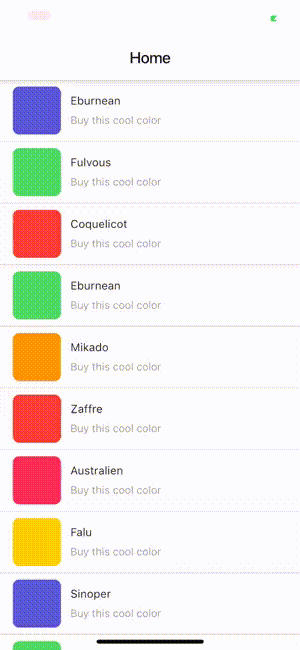
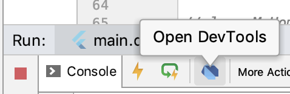
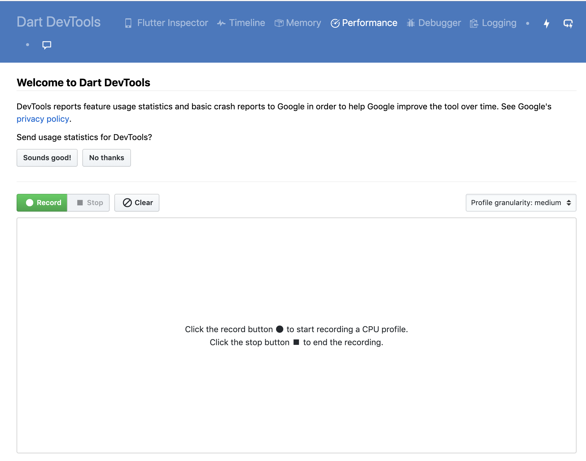
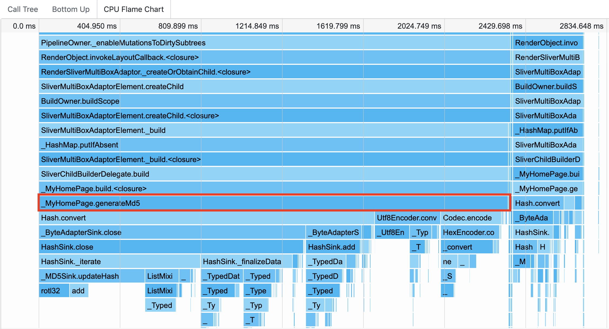

- 00 开篇词 为什么每一位大前端从业者都应该学习Flutter？.md
- 01 预习篇 · 从0开始搭建Flutter工程环境.md
- 02 预习篇 · Dart语言概览.md
- 03 深入理解跨平台方案的历史发展逻辑.md
- 04 Flutter区别于其他方案的关键技术是什么？.md
- 05 从标准模板入手，体会Flutter代码是如何运行在原生系统上的.md
- 06 基础语法与类型变量：Dart是如何表示信息的？.md
- 07 函数、类与运算符：Dart是如何处理信息的？.md
- 08 综合案例：掌握Dart核心特性.md
- 09 Widget，构建Flutter界面的基石.md
- 10 Widget中的State到底是什么？.md
- 11 提到生命周期，我们是在说什么？.md
- 12 经典控件（一）：文本、图片和按钮在Flutter中怎么用？.md
- 13 经典控件（二）：UITableView_ListView在Flutter中是什么？.md
- 14 经典布局：如何定义子控件在父容器中排版的位置？.md
- 15 组合与自绘，我该选用何种方式自定义Widget？.md
- 16 从夜间模式说起，如何定制不同风格的App主题？.md
- 17 依赖管理（一）：图片、配置和字体在Flutter中怎么用？.md
- 18 依赖管理（二）：第三方组件库在Flutter中要如何管理？.md
- 19 用户交互事件该如何响应？.md
- 20 关于跨组件传递数据，你只需要记住这三招.md
- 21 路由与导航，Flutter是这样实现页面切换的.md
- 22 如何构造炫酷的动画效果？.md
- 23 单线程模型怎么保证UI运行流畅？.md
- 24 HTTP网络编程与JSON解析.md
- 25 本地存储与数据库的使用和优化.md
- 26 如何在Dart层兼容Android_iOS平台特定实现？（一）.md
- 27 如何在Dart层兼容Android_iOS平台特定实现？（二）.md
- 28 如何在原生应用中混编Flutter工程？.md
- 29 混合开发，该用何种方案管理导航栈？.md
- 30 为什么需要做状态管理，怎么做？.md
- 31 如何实现原生推送能力？.md
- 32 适配国际化，除了多语言我们还需要注意什么_.md
- 33 如何适配不同分辨率的手机屏幕？.md
- 34 如何理解Flutter的编译模式？.md
- 35 Hot Reload是怎么做到的？.md
- 36 如何通过工具链优化开发调试效率？.md
- 37 如何检测并优化Flutter App的整体性能表现？.md
- 38 如何通过自动化测试提高交付质量？.md
- 39 线上出现问题，该如何做好异常捕获与信息采集？.md
- 40 衡量Flutter App线上质量，我们需要关注这三个指标.md
- 41 组件化和平台化，该如何组织合理稳定的Flutter工程结构？.md
- 42 如何构建高效的Flutter App打包发布环境？.md
- 43 如何构建自己的Flutter混合开发框架（一）？.md
- 44 如何构建自己的Flutter混合开发框架（二）？.md
- 特别放送 温故而知新，与你说说专栏的那些思考题.md
- 结束语 勿畏难，勿轻略.md
37 如何检测并优化Flutter App的整体性能表现？
你好，我是陈航。
在上一篇文章中，我与你分享了调试Flutter代码的3种基本方式，即输出日志、断点调试与布局调试。
通过可定制打印行为的debugPrint函数，我们可以实现生产环境与开发环境不同的日志输出行为，从而保证在开发期打印的调试信息不会被发布至线上；借助于IDE（Android Studio）所提供的断点调试选项，我们可以不断调整代码执行步长和代码暂停条件，收敛问题发生范围，直至找到问题根源；而如果我们想找出代码中的布局渲染类Bug，则可以通过Debug Painting和Flutter Inspector提供的辅助线和视图可视化信息，来更为精准地定位视觉问题。
除了代码逻辑Bug和视觉异常这些功能层面的问题之外，移动应用另一类常见的问题是性能问题，比如滑动操作不流畅、页面出现卡顿丢帧现象等。这些问题虽然不至于让移动应用完全不可用，但也很容易引起用户反感，从而对应用质量产生质疑，甚至失去耐心。
那么，如果应用渲染并不流畅，出现了性能问题，我们该如何检测，又该从哪里着手处理呢？
在Flutter中，性能问题可以分为GPU线程问题和UI线程（CPU）问题两类。这些问题的确认都需要先通过性能图层进行初步分析，而一旦确认问题存在，接下来就需要利用Flutter提供的各类分析工具来定位问题了。
所以在今天这篇文章中，我会与你一起学习分析Flutter应用性能问题的基本思路和工具，以及常见的优化办法。
如何使用性能图层？
要解决问题，我们首先得了解如何去度量问题，性能分析也不例外。Flutter提供了度量性能问题的工具和手段，来帮助我们快速定位代码中的性能问题，而性能图层就是帮助我们确认问题影响范围的利器。
为了使用性能图层，我们首先需要以分析（Profile）模式启动应用。与调试代码可以通过模拟器在调试模式下找到代码逻辑Bug不同，性能问题需要在发布模式下使用真机进行检测。
这是因为，相比发布模式而言，调试模式增加了很多额外的检查（比如断言），这些检查可能会耗费很多资源；更重要的是，调试模式使用JIT模式运行应用，代码执行效率较低。这就使得调试模式运行的应用，无法真实反映出它的性能问题。
而另一方面，模拟器使用的指令集为x86，而真机使用的指令集是ARM。这两种方式的二进制代码执行行为完全不同，因此模拟器与真机的性能差异较大：一些x86指令集擅长的操作模拟器会比真机快，而另一些操作则会比真机慢。这也使得我们无法使用模拟器来评估真机才能出现的性能问题。
为了调试性能问题，我们需要在发布模式的基础之上，为分析工具提供少量必要的应用追踪信息，这就是分析模式。除了一些调试性能问题必须的追踪方法之外，Flutter应用的分析模式和发布模式的编译和运行是类似的，只是启动参数变成了profile而已：我们既可以在Android Studio中通过菜单栏点击Run->Profile ‘main.dart’ 选项启动应用，也可以通过命令行参数flutter run –profile运行Flutter应用。
分析渲染问题
在完成了应用启动之后，接下来我们就可以利用Flutter提供的渲染问题分析工具，即性能图层（Performance Overlay），来分析渲染问题了。
性能图层会在当前应用的最上层，以Flutter引擎自绘的方式展示GPU与UI线程的执行图表，而其中每一张图表都代表当前线程最近 300帧的表现，如果UI产生了卡顿（跳帧），这些图表可以帮助我们分析并找到原因。
下图演示了性能图层的展现样式。其中，GPU线程的性能情况在上面，UI线程的情况显示在下面，蓝色垂直的线条表示已执行的正常帧，绿色的线条代表的是当前帧：

图1 性能图层
为了保持60Hz的刷新频率，GPU线程与UI线程中执行每一帧耗费的时间都应该小于16ms（1/60秒）。在这其中有一帧处理时间过长，就会导致界面卡顿，图表中就会展示出一个红色竖条。下图演示了应用出现渲染和绘制耗时的情况下，性能图层的展示样式：

图2 渲染和绘制耗时异常
如果红色竖条出现在GPU线程图表，意味着渲染的图形太复杂，导致无法快速渲染；而如果是出现在了UI线程图表，则表示Dart代码消耗了大量资源，需要优化代码执行时间。
接下来，我们就先看看GPU问题定位吧。
GPU问题定位
GPU问题主要集中在底层渲染耗时上。有时候Widget树虽然构造起来容易，但在GPU线程下的渲染却很耗时。涉及Widget裁剪、蒙层这类多视图叠加渲染，或是由于缺少缓存导致静态图像的反复绘制，都会明显拖慢GPU的渲染速度。
我们可以使用性能图层提供的两项参数，即检查多视图叠加的视图渲染开关checkerboardOffscreenLayers，和检查缓存的图像开关checkerboardRasterCacheImages，来检查这两种情况。
checkerboardOffscreenLayers
多视图叠加通常会用到Canvas里的savaLayer方法，这个方法在实现一些特定的效果（比如半透明）时非常有用，但由于其底层实现会在GPU渲染上涉及多图层的反复绘制，因此会带来较大的性能问题。
对于saveLayer方法使用情况的检查，我们只要在MaterialApp的初始化方法中，将checkerboardOffscreenLayers开关设置为true，分析工具就会自动帮我们检测多视图叠加的情况了：使用了saveLayer的Widget会自动显示为棋盘格式，并随着页面刷新而闪烁。
不过，saveLayer是一个较为底层的绘制方法，因此我们一般不会直接使用它，而是会通过一些功能性Widget，在涉及需要剪切或半透明蒙层的场景中间接地使用。所以一旦遇到这种情况，我们需要思考一下是否一定要这么做，能不能通过其他方式来实现呢。
比如下面的例子中，我们使用CupertinoPageScaffold与CupertinoNavigationBar实现了一个动态模糊的效果。
CupertinoPageScaffold(
navigationBar: CupertinoNavigationBar(),//动态模糊导航栏
child: ListView.builder(
itemCount: 100,
//为列表创建100个不同颜色的RowItem
itemBuilder: (context, index)=>TabRowItem(
index: index,
lastItem: index == 100 - 1,
color: colorItems[index],//设置不同的颜色
colorName: colorNameItems[index],
)
)
);

图3 动态模糊效果
由于视图滚动过程中频繁涉及视图蒙层效果的更新，因此checkerboardOffscreenLayers检测图层也感受到了对GPU的渲染压力，频繁的刷新闪烁。

图4 检测saveLayer使用
如果我们没有对动态模糊效果的特殊需求，则可以使用不带模糊效果的Scaffold和白色的AppBar实现同样的产品功能，来解决这个性能问题：
Scaffold(
//使用普通的白色AppBar
appBar: AppBar(title: Text('Home', style: TextStyle(color:Colors.black),),backgroundColor: Colors.white),
body: ListView.builder(
itemCount: 100,
//为列表创建100个不同颜色的RowItem
itemBuilder: (context, index)=>TabRowItem(
index: index,
lastItem: index == 100 - 1,
color: colorItems[index],//设置不同的颜色
colorName: colorNameItems[index],
)
),
);
运行一下代码，可以看到，在去掉了动态模糊效果之后，GPU的渲染压力得到了缓解，checkerboardOffscreenLayers检测图层也不再频繁闪烁了。

图5 去掉动态模糊效果
checkerboardRasterCacheImages
从资源的角度看，另一类非常消耗性能的操作是，渲染图像。这是因为图像的渲染涉及I/O、GPU存储，以及不同通道的数据格式转换，因此渲染过程的构建需要消耗大量资源。为了缓解GPU的压力，Flutter提供了多层次的缓存快照，这样Widget重建时就无需重新绘制静态图像了。
与检查多视图叠加渲染的checkerboardOffscreenLayers参数类似，Flutter也提供了检查缓存图像的开关checkerboardRasterCacheImages，来检测在界面重绘时频繁闪烁的图像（即没有静态缓存）。
我们可以把需要静态缓存的图像加到RepaintBoundary中，RepaintBoundary可以确定Widget树的重绘边界，如果图像足够复杂，Flutter引擎会自动将其缓存，避免重复刷新。当然，因为缓存资源有限，如果引擎认为图像不够复杂，也可能会忽略RepaintBoundary。
如下代码展示了通过RepaintBoundary，将一个静态复合Widget加入缓存的具体用法。可以看到，RepaintBoundary在使用上与普通Widget并无区别：
RepaintBoundary(//设置静态缓存图像
child: Center(
child: Container(
color: Colors.black,
height: 10.0,
width: 10.0,
),
));
UI线程问题定位
如果说GPU线程问题定位的是渲染引擎底层渲染异常，那么UI线程问题发现的则是应用的性能瓶颈。比如在视图构建时，在build方法中使用了一些复杂的运算，或是在主Isolate中进行了同步的I/O操作。这些问题，都会明显增加CPU的处理时间，拖慢应用的响应速度。
这时，我们可以使用Flutter提供的Performance工具，来记录应用的执行轨迹。Performance是一个强大的性能分析工具，能够以时间轴的方式展示CPU的调用栈和执行时间，去检查代码中可疑的方法调用。
在点击了Android Studio底部工具栏中的“Open DevTools”按钮之后，系统会自动打开Dart DevTools的网页，将顶部的tab切换到Performance后，我们就可以开始分析代码中的性能问题了。

图6 打开Performance工具

图7 Performance主界面
接下来，我们通过一个ListView中计算MD5的例子，来演示Performance的具体分析过程。
考虑到在build函数中进行渲染信息的组装是一个常见的操作，为了演示这个知识点，我们故意放大了计算MD5的耗时，循环迭代计算了1万次：
class MyHomePage extends StatelessWidget {
MyHomePage({Key key}) : super(key: key);
String generateMd5(String data) {
//MD5固定算法
var content = new Utf8Encoder().convert(data);
var digest = md5.convert(content);
return hex.encode(digest.bytes);
}
@override
Widget build(BuildContext context) {
return Scaffold(
appBar: AppBar(title: Text('demo')),
body: ListView.builder(
itemCount: 30,// 列表元素个数
itemBuilder: (context, index) {
//反复迭代计算MD5
String str = '1234567890abcdefghijklmnopqrstuvwxyz';
for(int i = 0;i<10000;i++) {
str = generateMd5(str);
}
return ListTile(title: Text("Index : $index"), subtitle: Text(str));
}// 列表项创建方法
),
);
}
}
与性能图层能够自动记录应用执行情况不同，使用Performance来分析代码执行轨迹，我们需要手动点击“Record”按钮去主动触发，在完成信息的抽样采集后，点击“Stop”按钮结束录制。这时，我们就可以得到在这期间应用的执行情况了。
Performance记录的应用执行情况叫做CPU帧图，又被称为火焰图。火焰图是基于记录代码执行结果所产生的图片，用来展示CPU的调用栈，表示的是CPU 的繁忙程度。
其中，y轴表示调用栈，其每一层都是一个函数。调用栈越深，火焰就越高，底部就是正在执行的函数，上方都是它的父函数；x轴表示单位时间，一个函数在x轴占据的宽度越宽，就表示它被采样到的次数越多，即执行时间越长。
所以，我们要检测CPU耗时问题，皆可以查看火焰图底部的哪个函数占据的宽度最大。只要有“平顶”，就表示该函数可能存在性能问题。比如，我们这个案例的火焰图如下所示：

图8 CPU帧图/火焰图
可以看到，_MyHomePage.generateMd5函数的执行时间最长，几乎占满了整个火焰图的宽，而这也与代码中存在的问题是一致的。
在找到了问题之后，我们就可以使用Isolate（或compute）将这些耗时的操作挪到并发主Isolate之外去完成了。
总结
好了，今天的分享就到这里。我们总结一下今天的主要内容吧。
在Flutter中，性能分析过程可以分为GPU线程问题定位和UI线程（CPU）问题定位，而它们都需要在真机上以分析模式（Profile）启动应用，并通过性能图层分析大致的渲染问题范围。一旦确认问题存在，接下来就需要利用Flutter所提供的分析工具来定位问题原因了。
关于GPU线程渲染问题，我们可以重点检查应用中是否存在多视图叠加渲染，或是静态图像反复刷新的现象。而UI线程渲染问题，我们则是通过Performance工具记录的火焰图（CPU帧图），分析代码耗时，找出应用执行瓶颈。
通常来说，由于Flutter采用基于声明式的UI设计理念，以数据驱动渲染，并采用Widget->Element->RenderObject三层结构，屏蔽了无谓的界面刷新，能够保证绝大多数情况下我们构建的应用都是高性能的，所以在使用分析工具检测出性能问题之后，通常我们并不需要做太多的细节优化工作，只需要在改造过程中避开一些常见的坑，就可以获得优异的性能。比如：
- 控制build方法耗时，将Widget拆小，避免直接返回一个巨大的Widget，这样Widget会享有更细粒度的重建和复用；
- 尽量不要为Widget设置半透明效果，而是考虑用图片的形式代替，这样被遮挡的Widget部分区域就不需要绘制了；
- 对列表采用懒加载而不是直接一次性创建所有的子Widget，这样视图的初始化时间就减少了。
思考题
最后，我给你留下一道思考题吧。
请你改造ListView计算MD5的示例，在保证原有功能的情况下，使用并发Isolate（或compute）完成MD5的计算。提示：计算过程可以使用CircularProgressIndicator来展示加载动画。
欢迎你在评论区给我留言分享你的观点，我会在下一篇文章中等待你！感谢你的收听，也欢迎你把这篇文章分享给更多的朋友一起阅读。
© 2019 - 2023 Liangliang Lee. Powered by gin and hexo-theme-book.